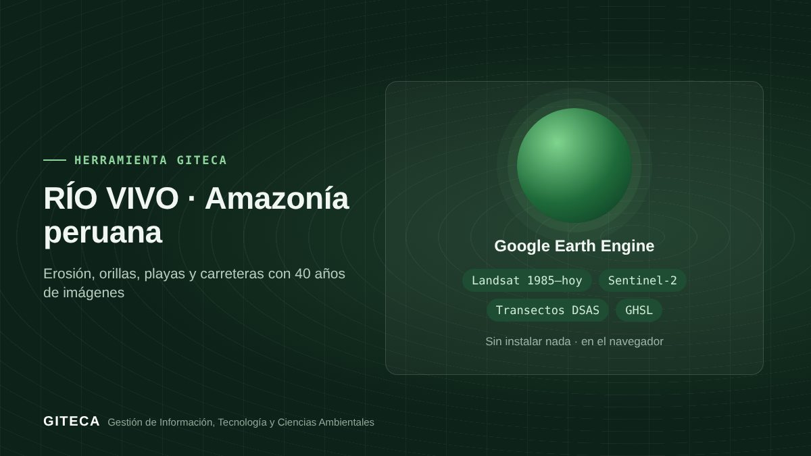

RÍO VIVO: cuánto avanza el río sobre tu pueblo, medido con 40 años de satélite
App de Google Earth Engine que mide la erosión y sedimentación de los ríos amazónicos, el retroceso de las orillas hacia los pueblos, las playas en aguas bajas y la ocupación a lo largo de carreteras, de 1985 a hoy.

¿En cuántos años alcanzará el río las primeras casas de Tiruntán, Genaro Herrera o Nauta?
Los ríos Ucayali, Marañón, Amazonas y Huallaga migran decenas o cientos de metros al año: se comen orillas, abandonan meandros y forman playas e islas. RÍO VIVO lleva a la Amazonía el método que se usa para las líneas de costa: posición de la orilla año por año, transectos al estilo DSAS y tasas de cambio, con imágenes Landsat desde 1985 y Sentinel-2 desde 2019.
Antes y ahora
- Descargar y seleccionar imágenes de la misma época hidrológica, año por año.
- Digitalizar a mano la orilla en cada imagen.
- Trazar transectos y medir distancias en un SIG con extensiones especializadas.
- Calcular tasas de retroceso y cruzarlas con las construcciones en hojas de cálculo.
- Eliges un pueblo de referencia o dibujas tu zona, el periodo y la época (aguas bajas o altas).
- La app detecta el agua de cada año y muestra la erosión, la sedimentación y el año en que se erosionó cada sector.
- Dibujas una línea base detrás del pueblo y obtienes los transectos con NSM, EPR y LRR (m/año).
- Si hay construcciones, la app estima los años hasta que la erosión las alcance; descargas en CSV, KML o SHP.
Tiempos de referencia estimados por el equipo GITECA; varían según el tamaño del área y la experiencia del usuario.
En la práctica: Incluye lugares de referencia de Loreto y Ucayali (Tiruntán, Genaro Herrera, Requena, Contamana, Nauta, Iquitos, Pebas, Caballococha, Yurimaguas, Pucallpa y otros) y el eje aproximado de la carretera Iquitos–Nauta.
Qué hace
- ② Cauce: agua por año, erosión y sedimentación en hectáreas y ha/año, frecuencia de agua, año de erosión y timelapse.
- ③ Orillas: transectos tipo DSAS con NSM, EPR y LRR, y años estimados hasta alcanzar las construcciones (Dynamic World).
- ④ Playas: arena expuesta en aguas bajas, superficie por año y polígonos del último año.
- ⑤ Carreteras: población y superficie construida (GHSL 1975–2025), pérdida de bosque por año y construcción reciente por franjas de distancia a la vía.
Para quién es
Empieza en 3 pasos
- Abre la app en el navegador y elige un pueblo o dibuja tu zona.
- Elige el periodo y la época hidrológica (compara siempre la misma época).
- Recorre las pestañas Cauce, Orillas, Playas o Carreteras y descarga los resultados.